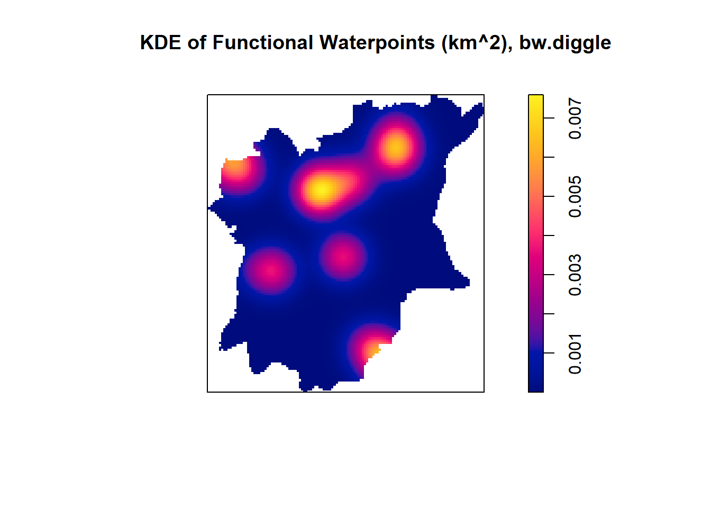
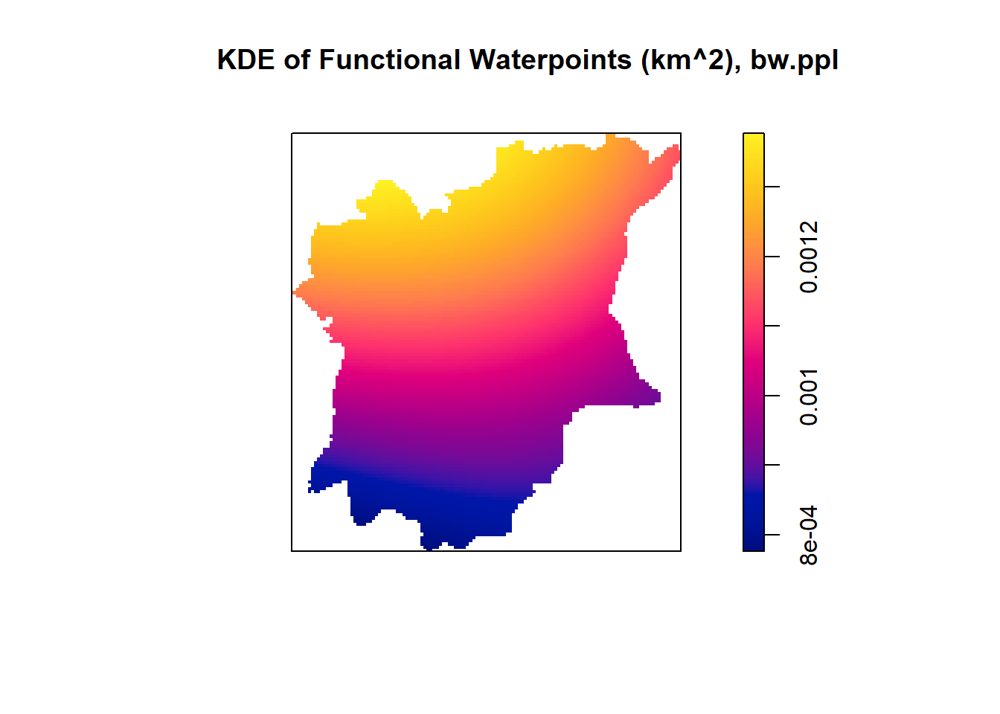
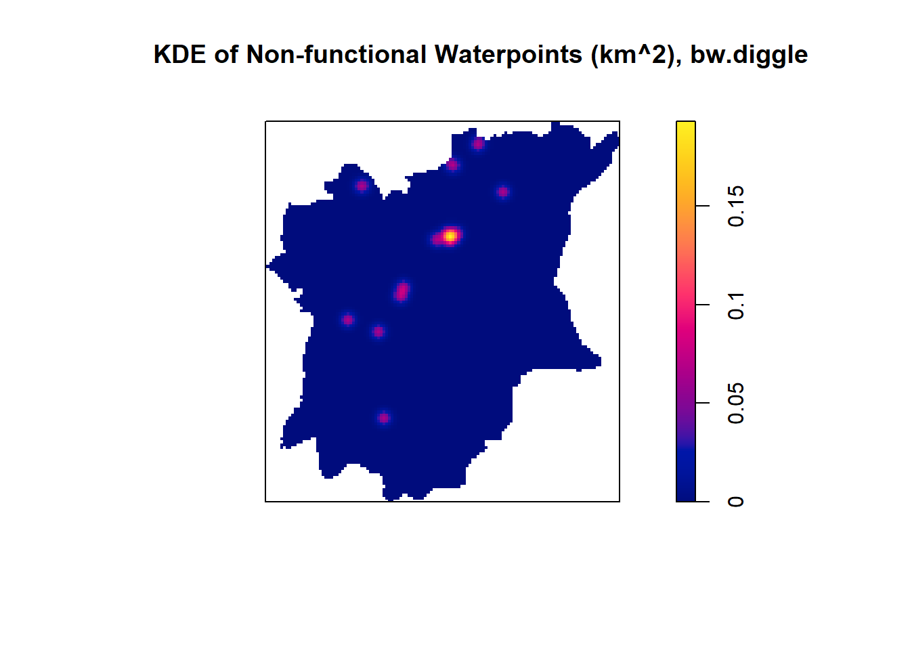
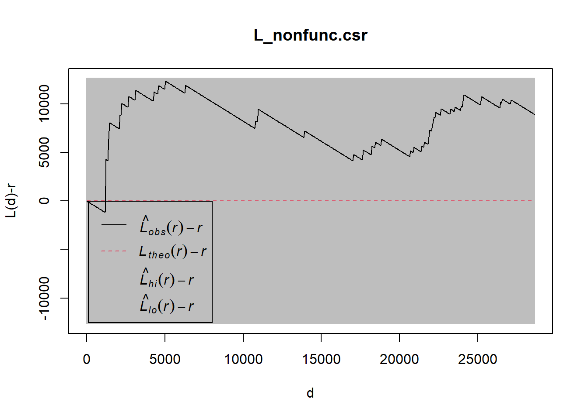

Code
pacman::p_load(sf, tidyverse, tmap, spatstat, raster, funModeling, maptools, sfdep)Hello! This is Rhonda Ho’s take-home Assignment 1 for IS415 module.
To view/hide all the code at once, please click on the “</> code” tab beside the title of this html document and select the option to view/hide the code.
The full details of this assignment can be found here.
Geospatial analytics hold tremendous potential to address complex problems facing society. In this study, I am tasked to apply appropriate spatial point patterns analysis methods to discover the geographical distribution of functional and non-function water points and their co-locations if any in Osun State, Nigeria.
For the purpose of this assignment, data from WPdx Global Data Repositories will be used. There are two versions of the data. They are: WPdx-Basic and WPdx+. You are required to use WPdx+ data set.
This study will focus of Osun State, Nigeria. The state boundary GIS data of Nigeria can be downloaded either from The Humanitarian Data Exchange portal or geoBoundaries.
The specific tasks of this take-home exercise are as follows:
Exploratory Spatial Data Analysis (ESDA)
Derive kernel density maps of functional and non-functional water points. Using appropriate tmap functions,
Display the kernel density maps on openstreetmap of Osub State, Nigeria.
Describe the spatial patterns revealed by the kernel density maps. Highlight the advantage of kernel density map over point map.
Second-order Spatial Point Patterns Analysis
With reference to the spatial point patterns observed in ESDA:
Formulate the null hypothesis and alternative hypothesis and select the confidence level.
Perform the test by using appropriate Second order spatial point patterns analysis technique.
With reference to the analysis results, draw statistical conclusions.
Spatial Correlation Analysis
In this section, you are required to confirm statistically if the spatial distribution of functional and non-functional water points are independent from each other.
Formulate the null hypothesis and alternative hypothesis and select the confidence level.
Perform the test by using appropriate Second order spatial point patterns analysis technique.
With reference to the analysis results, draw statistical conclusions.
For the purpose of this assignment, the following packages will be used:
sf: used for importing, managing, and processing geospatial data
tidyverse: a collection of packages for data science tasks
tmap: used for creating thematic maps, such as choropleth and bubble maps
spatstat: used for point pattern analysis
raster: reads, writes, manipulates, analyses and models gridded spatial data (i.e. raster-based geographical data)
funModeling: contains a set of functions related to exploratory data analysis, data preparation, and model performance
maptools: a set of tools for manipulating geographic data and
sfdep: for performing geospatial data wrangling and local colocation quotient analysis.
pacman::p_load(sf, tidyverse, tmap, spatstat, raster, funModeling, maptools, sfdep)In this section, st_read() of sf package will be used to import the 2 geospatial data sets into R.
For Nigeria, there are three Projected Coordinate Systems of Nigeria, which is EPSG: 26391, 26392, and 26303. For this assignment, I will be using EPSG:26392.
geoNGA <- st_read("data/geospatial/",
layer = "geoBoundaries-NGA-ADM2") %>%
st_transform(crs = 26392)Reading layer `geoBoundaries-NGA-ADM2' from data source
`C:\RhondaHO\IS415-GAA\Take-home_Assgn\Take-home_Assgn1\data\geospatial'
using driver `ESRI Shapefile'
Simple feature collection with 774 features and 5 fields
Geometry type: MULTIPOLYGON
Dimension: XY
Bounding box: xmin: 2.668534 ymin: 4.273007 xmax: 14.67882 ymax: 13.89442
Geodetic CRS: WGS 84To understand more about the columns and data across our dataset, I used the function glimpse() as shown in the code chunk below.
glimpse(geoNGA)Rows: 774
Columns: 6
$ shapeName <chr> "Aba North", "Aba South", "Abadam", "Abaji", "Abak", "Abaka…
$ Level <chr> "ADM2", "ADM2", "ADM2", "ADM2", "ADM2", "ADM2", "ADM2", "AD…
$ shapeID <chr> "NGA-ADM2-72505758B79815894", "NGA-ADM2-72505758B67905963",…
$ shapeGroup <chr> "NGA", "NGA", "NGA", "NGA", "NGA", "NGA", "NGA", "NGA", "NG…
$ shapeType <chr> "ADM2", "ADM2", "ADM2", "ADM2", "ADM2", "ADM2", "ADM2", "AD…
$ geometry <MULTIPOLYGON [m]> MULTIPOLYGON (((548795.5 11..., MULTIPOLYGON (…NGA <- st_read("data/geospatial/",
layer = "nga_admbnda_adm2_osgof_20190417") %>%
st_transform(crs = 26392)Reading layer `nga_admbnda_adm2_osgof_20190417' from data source
`C:\RhondaHO\IS415-GAA\Take-home_Assgn\Take-home_Assgn1\data\geospatial'
using driver `ESRI Shapefile'
Simple feature collection with 774 features and 16 fields
Geometry type: MULTIPOLYGON
Dimension: XY
Bounding box: xmin: 2.668534 ymin: 4.273007 xmax: 14.67882 ymax: 13.89442
Geodetic CRS: WGS 84glimpse(NGA)Rows: 774
Columns: 17
$ Shape_Leng <dbl> 0.2370744, 0.2624772, 3.0753158, 2.5379842, 0.6871498, 1.06…
$ Shape_Area <dbl> 0.0015239210, 0.0035311037, 0.3268678399, 0.0683785064, 0.0…
$ ADM2_EN <chr> "Aba North", "Aba South", "Abadam", "Abaji", "Abak", "Abaka…
$ ADM2_PCODE <chr> "NG001001", "NG001002", "NG008001", "NG015001", "NG003001",…
$ ADM2_REF <chr> "Aba North", "Aba South", "Abadam", "Abaji", "Abak", "Abaka…
$ ADM2ALT1EN <chr> NA, NA, NA, NA, NA, NA, NA, NA, NA, NA, NA, NA, NA, NA, NA,…
$ ADM2ALT2EN <chr> NA, NA, NA, NA, NA, NA, NA, NA, NA, NA, NA, NA, NA, NA, NA,…
$ ADM1_EN <chr> "Abia", "Abia", "Borno", "Federal Capital Territory", "Akwa…
$ ADM1_PCODE <chr> "NG001", "NG001", "NG008", "NG015", "NG003", "NG011", "NG02…
$ ADM0_EN <chr> "Nigeria", "Nigeria", "Nigeria", "Nigeria", "Nigeria", "Nig…
$ ADM0_PCODE <chr> "NG", "NG", "NG", "NG", "NG", "NG", "NG", "NG", "NG", "NG",…
$ date <date> 2016-11-29, 2016-11-29, 2016-11-29, 2016-11-29, 2016-11-29…
$ validOn <date> 2019-04-17, 2019-04-17, 2019-04-17, 2019-04-17, 2019-04-17…
$ validTo <date> NA, NA, NA, NA, NA, NA, NA, NA, NA, NA, NA, NA, NA, NA, NA…
$ SD_EN <chr> "Abia South", "Abia South", "Borno North", "Federal Capital…
$ SD_PCODE <chr> "NG00103", "NG00103", "NG00802", "NG01501", "NG00302", "NG0…
$ geometry <MULTIPOLYGON [m]> MULTIPOLYGON (((548795.5 11..., MULTIPOLYGON (…By examining both of the sf dataframes closely, we can observe that the NGA dataset provides us with more information with regards to the state i.e Osun which we require to perform our tasks. Hence, NGA data.frame will be used for the subsequent processing.
Moving on to the Aspatial data, as it is in an excel format, I decided to use read_csv()function. As the area of study for this task is focused on Osun State, Nigeria, I then filtered out the values accordingly using the filter() function. But how do we know which column to filter by? First, I read up on the description of the metadata in the Aspatial data here and discovered that I needed to filter out the country, Nigeria under the ‘clean_country_name’.
wp_nga <- read_csv("data/aspatial/wpdx.csv") %>%
filter(clean_country_name %in% c("Nigeria"))Next, I took a closer look at the data and discovered that the states of Nigeria are splitted in to 4 divisions. To determine where Osun is, I used the function, any() to check which column Osun belonged to.
any(wp_nga$clean_adm1=="Osun")[1] TRUEany(wp_nga$clean_adm2=="Osun")[1] FALSEany(wp_nga$clean_adm3=="Osun")[1] NAany(wp_nga$clean_adm4=="Osun")[1] NABased on the output above, Osun only exists under the column ‘clean_adm1’, so I filtered out the Osun state in that specific column.
wp_nga <- read_csv("data/aspatial/wpdx.csv") %>%
filter(clean_adm1 %in% c("Osun"))Next, we need to convert the aspatial data into sf data.frame.
To do so, it requires two steps. First, we need to convert the wkt field into sfc field by using st_as_sfc() data type.
wp_nga$Geometry = st_as_sfc(wp_nga$`new_georeferenced_column_`)
wp_nga# A tibble: 35 × 75
row_id source lat_deg lon_deg report_date statu…¹ water…² water…³
<dbl> <chr> <dbl> <dbl> <dttm> <chr> <chr> <chr>
1 225950 Federal M… 7.43 4.26 2015-05-05 00:00:00 Yes Boreho… Well
2 225524 Federal M… 7.78 4.56 2015-04-22 00:00:00 Yes Protec… Well
3 197014 Federal M… 7.49 4.53 2015-04-30 00:00:00 Yes Boreho… Well
4 225173 Federal M… 7.93 4.73 2015-05-02 00:00:00 Yes Boreho… Well
5 225843 Federal M… 7.74 4.44 2015-05-08 00:00:00 Yes Boreho… Well
6 235508 Federal M… 7.15 4.64 2015-04-27 00:00:00 Yes Protec… Well
7 197708 Federal M… 7.87 4.72 2015-05-13 00:00:00 Yes Boreho… Well
8 195041 Federal M… 7.73 4.45 2015-06-17 00:00:00 Yes Protec… Spring
9 225222 Federal M… 7.81 4.15 2015-05-14 00:00:00 Yes Protec… Spring
10 460770 GRID3 7.4 4.33 2018-06-13 00:00:00 Unknown Boreho… Well
# … with 25 more rows, 67 more variables: water_tech_clean <chr>,
# `_water_tech_category` <chr>, facility_type <chr>,
# clean_country_name <chr>, clean_adm1 <chr>, clean_adm2 <chr>,
# clean_adm3 <lgl>, clean_adm4 <lgl>, install_year <dbl>, installer <chr>,
# rehab_year <lgl>, rehabilitator <chr>, management_clean <chr>,
# status_clean <chr>, pay <chr>, fecal_coliform_presence <lgl>,
# fecal_coliform_value <dbl>, subjective_quality <chr>, activity_id <chr>, …Next, we will convert the tibble data.frame into an sf object by using st_sf(). It is also important for us to include the referencing system of the data into the sf object.
wp_sf <- st_sf(wp_nga, crs=4326)
wp_sfSimple feature collection with 35 features and 74 fields
Geometry type: POINT
Dimension: XY
Bounding box: xmin: 4.146705 ymin: 7.153846 xmax: 5 ymax: 8.031187
Geodetic CRS: WGS 84
# A tibble: 35 × 75
row_id source lat_deg lon_deg report_date statu…¹ water…² water…³
* <dbl> <chr> <dbl> <dbl> <dttm> <chr> <chr> <chr>
1 225950 Federal M… 7.43 4.26 2015-05-05 00:00:00 Yes Boreho… Well
2 225524 Federal M… 7.78 4.56 2015-04-22 00:00:00 Yes Protec… Well
3 197014 Federal M… 7.49 4.53 2015-04-30 00:00:00 Yes Boreho… Well
4 225173 Federal M… 7.93 4.73 2015-05-02 00:00:00 Yes Boreho… Well
5 225843 Federal M… 7.74 4.44 2015-05-08 00:00:00 Yes Boreho… Well
6 235508 Federal M… 7.15 4.64 2015-04-27 00:00:00 Yes Protec… Well
7 197708 Federal M… 7.87 4.72 2015-05-13 00:00:00 Yes Boreho… Well
8 195041 Federal M… 7.73 4.45 2015-06-17 00:00:00 Yes Protec… Spring
9 225222 Federal M… 7.81 4.15 2015-05-14 00:00:00 Yes Protec… Spring
10 460770 GRID3 7.4 4.33 2018-06-13 00:00:00 Unknown Boreho… Well
# … with 25 more rows, 67 more variables: water_tech_clean <chr>,
# `_water_tech_category` <chr>, facility_type <chr>,
# clean_country_name <chr>, clean_adm1 <chr>, clean_adm2 <chr>,
# clean_adm3 <lgl>, clean_adm4 <lgl>, install_year <dbl>, installer <chr>,
# rehab_year <lgl>, rehabilitator <chr>, management_clean <chr>,
# status_clean <chr>, pay <chr>, fecal_coliform_presence <lgl>,
# fecal_coliform_value <dbl>, subjective_quality <chr>, activity_id <chr>, …Afterwards, we need to transform the projection from wgs84 to appropriate projected coordinate system of Nigeria i.e 26392.
wp_sf <- wp_sf %>%
st_transform(crs = 26392)Data cleaning is the process of fixing or removing incorrect, corrupted, incorrectly formatted, duplicate, or incomplete data within a dataset. This is important to improve the data quality which will allow us to analyse and infer better quality information.
NGA sf data.frame consists of many redundent fields. Thus, I used select() of dplyr to retain the relevant columns which contain the values under the state of Osun.
# method 1: using select function
NGA <- NGA %>%
dplyr::select(c(3:4,8:9))
#dplyr:: is used as there may be library conflicts which prevents me from using the code
# method 2: keeping the column by name
#keeps <- c("ADM2_EN","ADM2_PCODE","ADM1_EN","ADM1_PCODE")
#NGA = NGA[keeps]Afterwards, I filtered the column ‘ADM1_EN’ to only include Osun Values.
NGA<- NGA %>%
filter(ADM1_EN %in% c("Osun"))For the code chunk below, the function duplicate() is used to check for any duplicated values.
NGA$ADM2_EN[duplicated(NGA$ADM2_EN)==TRUE]character(0)Hence, based on the output above, there is no duplicated values.
In this section, I would like to perform data wrangling to improve the data usability as it transforms raw data into more readily used formats.
First off, I discovered that the column ‘status_clean’ shows the type of waterpoints in Nigeria, Osun. To display the frequencies and have a closer look at the unique values of the type ofwaterpoints, I used the function freq() .
funModeling::freq(data = wp_sf,
input = 'status_clean') status_clean frequency percentage cumulative_perc
1 Abandoned/Decommissioned 15 42.86 42.86
2 <NA> 11 31.43 74.29
3 Functional 8 22.86 97.15
4 Functional, needs repair 1 2.86 100.00#unique(wp_sf$status_clean)As you can see from the output above, there are 4 classes in the ‘status_clean’ field.
Next, we select ‘status_clean’ and the replace_na() function to replace NA values into ‘Unknown’.
wp_sf_nga <- wp_sf %>%
dplyr::select(status_clean) %>%
mutate(status_clean = replace_na(
status_clean, "Unknown"))Now, we can start to extract the water data points base on its status which is functional, non-functional and unknown using the filter() function.
wp_functional <- wp_sf_nga %>%
filter(status_clean %in%
c("Functional",
"Functional, needs repair"))
wp_nonfunctional <- wp_sf_nga %>%
filter(status_clean %in%
c("Abandoned/Decommissioned"))
wp_unknown <- wp_sf_nga %>%
filter(status_clean == "Unknown")Next, since the task requires us to perform exploratory spatial data analysis (ESDA), we need to convert simple feature data frame to sp’s Spatial* class using the as_Spatial() function.
#overview of wp in Ossun state
wp_spatial <- as_Spatial(wp_sf)
#only functional wp in Ossun state
wp_func_spatial <- as_Spatial(wp_functional)
#only non-functional wp in Ossun state
wp_nonfunc_spatial <- as_Spatial(wp_nonfunctional)
#NGA dataset
NGA_spatial <- as_Spatial(NGA)To further understand our data, we run the code chunk below.
wp_spatialclass : SpatialPointsDataFrame
features : 35
extent : 190156.4, 284643.8, 350391.9, 447614.1 (xmin, xmax, ymin, ymax)
crs : +proj=tmerc +lat_0=4 +lon_0=8.5 +k=0.99975 +x_0=670553.98 +y_0=0 +a=6378249.145 +rf=293.465 +towgs84=-92,-93,122,0,0,0,0 +units=m +no_defs
variables : 74
names : row_id, source, lat_deg, lon_deg, report_date, status_id, water_source_clean, water_source_category, water_tech_clean, X_water_tech_category, facility_type, clean_country_name, clean_adm1, clean_adm2, clean_adm3, ...
min values : 194558, Federal Ministry of Water Resources, Nigeria, 7.153846, 4.146705, 1429660800, No, Borehole, Spring, Hand Pump, Hand Pump, Improved, Nigeria, Osun, Aiyedade, NA, ...
max values : 684595, GRID3, 8.0311867, 5, 1535500800, Yes, Undefined Hand Dug Well, Well, Mechanized Pump, Mechanized Pump, Improved, Nigeria, Osun, Osogbo, NA, ... NGA_spatialclass : SpatialPolygonsDataFrame
features : 30
extent : 176503.2, 291043.8, 331434.7, 454520.1 (xmin, xmax, ymin, ymax)
crs : +proj=tmerc +lat_0=4 +lon_0=8.5 +k=0.99975 +x_0=670553.98 +y_0=0 +a=6378249.145 +rf=293.465 +towgs84=-92,-93,122,0,0,0,0 +units=m +no_defs
variables : 4
names : ADM2_EN, ADM2_PCODE, ADM1_EN, ADM1_PCODE
min values : Aiyedade, NG030001, Osun, NG030
max values : Osogbo, NG030030, Osun, NG030 Looking at the output above, we understand that wp_spatial belongs to the SpatialPointsDataFrame while NGA_spatial belongs to SpatialPolygonsDataFrame class. This will help us in the next section which is the conversion of Spatial* class into generic sp format.
As spatstat requires the analytical data in ppp object form. We need to convert the Spatial classes* into Spatial object first. The codes chunk below converts the Spatial* classes into generic sp objects.
wp_sp <- as(wp_spatial, "SpatialPoints")
wp_func_sp <- as(wp_func_spatial, "SpatialPoints")
wp_nonfunc_sp <- as(wp_nonfunc_spatial, "SpatialPoints")
NGA_sp <- as(NGA_spatial, "SpatialPolygons")Now, we will use as.ppp() function of spatstat to convert the spatial data into spatstat’s ppp object format.
wp_ppp <- as(wp_sp, "ppp")
wp_pppPlanar point pattern: 35 points
window: rectangle = [190156.37, 284643.78] x [350391.9, 447614.1] unitswp_func_ppp <- as(wp_func_sp, "ppp")
wp_nonfunc_ppp <- as(wp_nonfunc_sp, "ppp")To further understand our data, let’s look at its summary statistics.
summary(wp_ppp)Planar point pattern: 35 points
Average intensity 3.810031e-09 points per square unit
Coordinates are given to 2 decimal places
i.e. rounded to the nearest multiple of 0.01 units
Window: rectangle = [190156.37, 284643.78] x [350391.9, 447614.1] units
(94490 x 97220 units)
Window area = 9186280000 square unitsBased on the output above, fortunately, we do not see a warning messages about duplicates. The code chunk below shows an alternate method of checking for duplicates. If it return FALSE, that means there is no duplicated values.
any(duplicated(wp_ppp))[1] FALSEany(duplicated(wp_func_ppp))[1] FALSEany(duplicated(wp_nonfunc_ppp))[1] FALSEWhen analysing spatial point patterns, it is a good practice to confine the analysis with a geographical area, for example, Nigeria’s boundary. In spatstat, an object called owin is specially designed to represent this polygonal region.
The code chunk below is used to convert Nigera, Ossun stats SpatialPolygon object into owin object of spatstat.
NGA_owin <- as(NGA_sp, "owin")
plot(NGA_owin)
summary(NGA_owin)Window: polygonal boundary
30 separate polygons (no holes)
vertices area relative.area
polygon 1 204 766084000 0.08870
polygon 2 81 304399000 0.03520
polygon 3 97 465688000 0.05390
polygon 4 124 373051000 0.04320
polygon 5 60 149473000 0.01730
polygon 6 84 144820000 0.01680
polygon 7 50 102243000 0.01180
polygon 8 72 216002000 0.02500
polygon 9 112 269897000 0.03130
polygon 10 125 365142000 0.04230
polygon 11 83 111191000 0.01290
polygon 12 126 192557000 0.02230
polygon 13 219 904397000 0.10500
polygon 14 174 741131000 0.08580
polygon 15 81 138742000 0.01610
polygon 16 65 119452000 0.01380
polygon 17 90 280205000 0.03240
polygon 18 69 69814600 0.00808
polygon 19 69 42727500 0.00495
polygon 20 49 30458800 0.00353
polygon 21 62 263505000 0.03050
polygon 22 93 438930000 0.05080
polygon 23 87 274127000 0.03170
polygon 24 105 509979000 0.05910
polygon 25 98 292058000 0.03380
polygon 26 64 327765000 0.03800
polygon 27 133 108945000 0.01260
polygon 28 122 462169000 0.05350
polygon 29 94 109715000 0.01270
polygon 30 95 61239800 0.00709
enclosing rectangle: [176503.22, 291043.82] x [331434.7, 454520.1] units
(114500 x 123100 units)
Window area = 8635910000 square units
Fraction of frame area: 0.613In this last step of geospatial data wrangling, we will extract all waterpoints that are located within Nigeria Ossun by using the code chunk below.
wpNGA_ppp = wp_ppp[NGA_owin]
summary(wpNGA_ppp)Planar point pattern: 34 points
Average intensity 3.937051e-09 points per square unit
Coordinates are given to 2 decimal places
i.e. rounded to the nearest multiple of 0.01 units
Window: polygonal boundary
30 separate polygons (no holes)
vertices area relative.area
polygon 1 204 766084000 0.08870
polygon 2 81 304399000 0.03520
polygon 3 97 465688000 0.05390
polygon 4 124 373051000 0.04320
polygon 5 60 149473000 0.01730
polygon 6 84 144820000 0.01680
polygon 7 50 102243000 0.01180
polygon 8 72 216002000 0.02500
polygon 9 112 269897000 0.03130
polygon 10 125 365142000 0.04230
polygon 11 83 111191000 0.01290
polygon 12 126 192557000 0.02230
polygon 13 219 904397000 0.10500
polygon 14 174 741131000 0.08580
polygon 15 81 138742000 0.01610
polygon 16 65 119452000 0.01380
polygon 17 90 280205000 0.03240
polygon 18 69 69814600 0.00808
polygon 19 69 42727500 0.00495
polygon 20 49 30458800 0.00353
polygon 21 62 263505000 0.03050
polygon 22 93 438930000 0.05080
polygon 23 87 274127000 0.03170
polygon 24 105 509979000 0.05910
polygon 25 98 292058000 0.03380
polygon 26 64 327765000 0.03800
polygon 27 133 108945000 0.01260
polygon 28 122 462169000 0.05350
polygon 29 94 109715000 0.01270
polygon 30 95 61239800 0.00709
enclosing rectangle: [176503.22, 291043.82] x [331434.7, 454520.1] units
(114500 x 123100 units)
Window area = 8635910000 square units
Fraction of frame area: 0.613plot(wpNGA_ppp)The code chunk below extract functional waterpoints that are located within Nigeria, Ossun.
wpfuncNGA_ppp = wp_func_ppp[NGA_owin]
summary(wpfuncNGA_ppp)Planar point pattern: 9 points
Average intensity 1.04216e-09 points per square unit
Coordinates are given to 2 decimal places
i.e. rounded to the nearest multiple of 0.01 units
Window: polygonal boundary
30 separate polygons (no holes)
vertices area relative.area
polygon 1 204 766084000 0.08870
polygon 2 81 304399000 0.03520
polygon 3 97 465688000 0.05390
polygon 4 124 373051000 0.04320
polygon 5 60 149473000 0.01730
polygon 6 84 144820000 0.01680
polygon 7 50 102243000 0.01180
polygon 8 72 216002000 0.02500
polygon 9 112 269897000 0.03130
polygon 10 125 365142000 0.04230
polygon 11 83 111191000 0.01290
polygon 12 126 192557000 0.02230
polygon 13 219 904397000 0.10500
polygon 14 174 741131000 0.08580
polygon 15 81 138742000 0.01610
polygon 16 65 119452000 0.01380
polygon 17 90 280205000 0.03240
polygon 18 69 69814600 0.00808
polygon 19 69 42727500 0.00495
polygon 20 49 30458800 0.00353
polygon 21 62 263505000 0.03050
polygon 22 93 438930000 0.05080
polygon 23 87 274127000 0.03170
polygon 24 105 509979000 0.05910
polygon 25 98 292058000 0.03380
polygon 26 64 327765000 0.03800
polygon 27 133 108945000 0.01260
polygon 28 122 462169000 0.05350
polygon 29 94 109715000 0.01270
polygon 30 95 61239800 0.00709
enclosing rectangle: [176503.22, 291043.82] x [331434.7, 454520.1] units
(114500 x 123100 units)
Window area = 8635910000 square units
Fraction of frame area: 0.613plot(wpfuncNGA_ppp)The code chunk below extract non-functional waterpoints that are located within Nigeria, Ossun.
wpnonfuncNGA_ppp = wp_nonfunc_ppp[NGA_owin]
summary(wpnonfuncNGA_ppp)Planar point pattern: 14 points
Average intensity 1.621139e-09 points per square unit
Coordinates are given to 2 decimal places
i.e. rounded to the nearest multiple of 0.01 units
Window: polygonal boundary
30 separate polygons (no holes)
vertices area relative.area
polygon 1 204 766084000 0.08870
polygon 2 81 304399000 0.03520
polygon 3 97 465688000 0.05390
polygon 4 124 373051000 0.04320
polygon 5 60 149473000 0.01730
polygon 6 84 144820000 0.01680
polygon 7 50 102243000 0.01180
polygon 8 72 216002000 0.02500
polygon 9 112 269897000 0.03130
polygon 10 125 365142000 0.04230
polygon 11 83 111191000 0.01290
polygon 12 126 192557000 0.02230
polygon 13 219 904397000 0.10500
polygon 14 174 741131000 0.08580
polygon 15 81 138742000 0.01610
polygon 16 65 119452000 0.01380
polygon 17 90 280205000 0.03240
polygon 18 69 69814600 0.00808
polygon 19 69 42727500 0.00495
polygon 20 49 30458800 0.00353
polygon 21 62 263505000 0.03050
polygon 22 93 438930000 0.05080
polygon 23 87 274127000 0.03170
polygon 24 105 509979000 0.05910
polygon 25 98 292058000 0.03380
polygon 26 64 327765000 0.03800
polygon 27 133 108945000 0.01260
polygon 28 122 462169000 0.05350
polygon 29 94 109715000 0.01270
polygon 30 95 61239800 0.00709
enclosing rectangle: [176503.22, 291043.82] x [331434.7, 454520.1] units
(114500 x 123100 units)
Window area = 8635910000 square units
Fraction of frame area: 0.613plot(wpnonfuncNGA_ppp)In this section, I will be computing the kernel density estimation (KDE) of waterpoints in Singapore.
The code chunk below computes a kernel density by using the following configurations of density() of spatstat:
bw.diggle() automatic bandwidth selection method. Other recommended methods are bw.CvL(), bw.scott() or bw.ppl().
The smoothing kernel used is gaussian, which is the default. Other smoothing methods are: “epanechnikov”, “quartic” or “disc”.
The intensity estimate is corrected for edge effect bias by using method described by Jones (1993) and Diggle (2010, equation 18.9). The default is FALSE.
kde_wpNGA_bw <- density(wpNGA_ppp,
sigma=bw.diggle,
edge=TRUE,
kernel="gaussian")
plot(kde_wpNGA_bw, main="KDE of Waterpoints in Nigeria, Ossun using bw.diggle (m^2)")As we can observe from the above, the density values of the output range from 0 to 0.00000004 which is way too small to comprehend. This is because the default unit of measurement of WGS 84 is in meter. As a result, the density values computed is in “number of points per square meter”. Thus, for a better visualisation, we need to rescale the KDE values.
In the code chunk below, rescale() is used to covert the unit of measurement from meter to kilometer.
wpNGA_ppp.km <- rescale(wpNGA_ppp, 1000, "km")Now, we can re-run density() using the resale data set and plot the output kde map.
kde_wpNGA.bw <- density(wpNGA_ppp.km, sigma=bw.diggle, edge=TRUE, kernel="gaussian")
plot(kde_wpNGA.bw,
main="KDE of Waterpoints in Nigeria, Ossun using bw.diggle (km^2)")According to Baddeley et. (2016), they suggested the use of the bw.ppl() algorithm because in ther experience it tends to produce the more appropriate values when the pattern consists predominantly of tight clusters. But they also insist that if the purpose of once study is to detect a single tight cluster in the midst of random noise then the bw.diggle() method seems to work best.
Hence, I decided to look at the output for both.
kde_wpNGA.ppl <- density(wpNGA_ppp.km,
sigma=bw.ppl,
edge=TRUE,
kernel="gaussian")
par(mfrow=c(1,2))
plot(kde_wpNGA.bw, main = "KDE of All Waterpoints, bw.diggle")
plot(kde_wpNGA.ppl, main = "KDE of All Waterpoints, bw.ppl")Next, I performed the same actions as above the code chunk to derive the KDE for functional and non functional waterpoints respectively.
#rescale
wpfuncNGA_ppp.km <- rescale(wpfuncNGA_ppp, 1000, "km")
#kde with bandwith - diggle
kde_wpfuncNGA.bw <- density(wpfuncNGA_ppp.km, sigma=bw.diggle, edge=TRUE, kernel="gaussian")
#kde with bandwith - ppl
kde_wpfuncNGA.ppl <- density(wpfuncNGA_ppp.km, sigma=bw.ppl, edge=TRUE, kernel="gaussian")
#plot
plot(kde_wpfuncNGA.bw, main="KDE of Functional Waterpoints (km^2), bw.diggle")
plot(kde_wpfuncNGA.ppl, main="KDE of Functional Waterpoints (km^2), bw.ppl")
#rescale
wpnonfuncNGA_ppp.km <- rescale(wpnonfuncNGA_ppp, 1000, "km")
#kde with bandwith - diggle
kde_wpnonfuncNGA.bw <- density(wpnonfuncNGA_ppp.km, sigma=bw.diggle, edge=TRUE, kernel="gaussian")
#kde with bandwith - ppl
kde_wpnonfuncNGA.ppl <- density(wpnonfuncNGA_ppp.km, sigma=bw.ppl, edge=TRUE, kernel="gaussian")
#plot
plot(kde_wpnonfuncNGA.bw, main="KDE of Non-functional Waterpoints (km^2), bw.diggle")
plot(kde_wpnonfuncNGA.ppl, main="KDE of Non-functional Waterpoints (km^2), bw.ppl")Next, for mapping purposes, I need to convert the KDE output into a grid object.
gridded_kde_wpNGA_bw <- as.SpatialGridDataFrame.im(kde_wpNGA.bw)
spplot(gridded_kde_wpNGA_bw, main = "Gridded KDE of All Waterpoints, bw.diggle")Next, we will convert the gridded kernal density objects into RasterLayer object by using raster() of raster package.
kde_wpNGA_bw_raster <- raster(gridded_kde_wpNGA_bw)
kde_wpNGA_bw_rasterclass : RasterLayer
dimensions : 128, 128, 16384 (nrow, ncol, ncell)
resolution : 0.8948485, 0.9616045 (x, y)
extent : 176.5032, 291.0438, 331.4347, 454.5201 (xmin, xmax, ymin, ymax)
crs : NA
source : memory
names : v
values : -3.469473e-18, 0.0596219 (min, max)Based on the output, the crs property is NA. Hence, we need to assign it.
projection(kde_wpNGA_bw_raster) <- CRS("+init=EPSG:26392")
kde_wpNGA_bw_rasterclass : RasterLayer
dimensions : 128, 128, 16384 (nrow, ncol, ncell)
resolution : 0.8948485, 0.9616045 (x, y)
extent : 176.5032, 291.0438, 331.4347, 454.5201 (xmin, xmax, ymin, ymax)
crs : +init=EPSG:26392
source : memory
names : v
values : -3.469473e-18, 0.0596219 (min, max)Based on the output above, the CRS information has been sucessfully added in.
Finally, we will display the raster in cartographic quality map using tmap package.
tm_shape(kde_wpNGA_bw_raster) +
tm_raster("v") +
tm_layout(main.title="Raster of KDE Waterpoints in Nigeria, Osun",
main.title.size=1,
legend.position = c("right", "bottom"), frame = FALSE)Based on the KDE graphs, most of the waterpoints are clustered around the top middle section. Upon further research on the cities in Nigeria, State of Osun, I discovered that most of waterpoints are clustered around the city called Osogbo where the Osun river resides.
To display raster of KDE of functional waterpoints in Nigeria, Osun, simply repeat the steps in section 6.
# Repeat the same steps in section 6.2
#convert to grid
gridded_kde_wpfuncNGA_bw <- as.SpatialGridDataFrame.im(kde_wpfuncNGA.bw)
spplot(gridded_kde_wpfuncNGA_bw, main = "Gridded KDE of Functional Waterpoints, bw.diggle")#create raster
kde_wpfuncNGA_bw_raster <- raster(gridded_kde_wpfuncNGA_bw)
#assign CRS info
projection(kde_wpfuncNGA_bw_raster) <- CRS("+init=EPSG:26392")tm_shape(kde_wpfuncNGA_bw_raster) +
tm_raster("v") +
tm_layout(main.title="Raster of KDE Functional Waterpoints in Nigeria, Osun",
main.title.size=0.8,
legend.position = c("right", "bottom"), frame = FALSE)Looking at the KDE graph for functional waterpoints in Nigeria, Osun using bw.diggle, we can observe that the functional waterpoints are mainly clustered in 6 areas. Roughly gauging based on the cities in Nigeria, Ossun, the most densely populated area of functional waterpoints area is found in the city of Osogbo, followed by Ikirun/Ota, Isero/Ikonifin and Okeigbo. The less densely populated area of functional waterpoints but we are still able to see a cluster are around the city of Ife and Ikire.
#convert to grid
gridded_kde_wpnonfuncNGA_bw <- as.SpatialGridDataFrame.im(kde_wpnonfuncNGA.bw)
spplot(gridded_kde_wpnonfuncNGA_bw, main = "Gridded KDE of Non-functional Waterpoints, bw.diggle")#create raster
kde_wpnonfuncNGA_bw_raster <- raster(gridded_kde_wpnonfuncNGA_bw)
#assign CRS info
projection(kde_wpnonfuncNGA_bw_raster) <- CRS("+init=EPSG:26392")tm_shape(kde_wpnonfuncNGA_bw_raster) +
tm_raster("v") +
tm_layout(main.title="Raster of KDE Non-functional Waterpoints in Nigeria, Osun",
main.title.size=0.7,
legend.position = c("right", "bottom"), frame = FALSE)Looking at the KDE graph for non-functional waterpoints in Nigeria, Osun using bw.diggle, we can observe that the non-functional waterpoints are roughly clustered in 9 areas. As compared to the functional waterpoints clusters, there are a larger number of non-functional waterpoints clusters but each cluster are much smaller. It also seems that the most densely populated non-functional waterpoints area is quite near, on the right of, the city of Osogbo, where most of the functional waterpoints are.
tmap_mode('view')
tm_basemap(server = "OpenStreetMap") +
tm_shape(kde_wpNGA_bw_raster) +
tm_raster("v") +
tm_layout(main.title="Raster of KDE Waterpoints in Nigeria, Osun",
main.title.size=1,
legend.position = c("right", "bottom"), frame = FALSE) +
tm_view(set.zoom.limits= c(18,29)) tmap_mode('plot')KDE map takes into account the location of features relative to each other while for a point map, it shows the quantity specified by the population field that falls within the identified neighborhood and divide that quantity by the area of the neighborhood.
The disadvantages of a point map includes:
Overcrowding of points, when the scale is small, which makes it harder for the user to analyse the map
Subjected to distortion of shape, distance, direction, scale, and area
Thus, using KDE map would be a more accurate representation than a point map as it tackles the disadvantages of a point map.
For this section, I intend to analyse the spatial point processes using L-Function by using Lest() of spatstat package and testing if it is significantly different from a complete spatial randomness process. Two hypothesis test will be conducted for functional and non-functional waterpoints in Nigeria, Osun respectively.
What is L-function?
A brief description of the L-function is that it is a variance-normalized version of the Ripley’s K statistic where it is used to determine whether points have a random, dispersed or clustered distribution pattern at certain scale. Thus, this allows us to compare a given point distribution with a random distribution that is the point distribution under investigation is tested against the null hypothesis that the points are distributed randomly and independently.
What is a Complete spatial randomness (CSR)?
It refers to a point process whereby point events occur within a given study area in a completely random fashion. It is synonymous with a homogeneous spatial Poisson process. If the hypothesis is not rejected, one can assume that the given point pattern is random, and we refer to it as a homogeneous Poisson point pattern.
Null hypothesis, H0: The distribution of functional waterpoints in Nigeria, Osun is randomly distributed.
Alternative hypothesis, H1: The distribution of functional waterpoints in Nigeria, Osun is not randomly distributed.
The hypothesis will be tested at a significance level of 0.05, with a corresponding confidence level of 95%.
L_func = Lest(wpfuncNGA_ppp, correction = "Ripley")
plot(L_func, . -r ~ r,
ylab= "L(d)-r", xlab = "d(m)")Next, we perform the function envelope() to compute simulation envelopes of the summary function i.e L function. The following arguments are used:
nsim : Number of simulated point patterns to be generated when computing the envelopes.
As we have chosen the significance level to be 0.05, following this formula from the documentation, significance level alpha = 2 * nrank / (1 + nsim), nsim would be 39.
rank: Integer. Rank of the envelope value amongst the nsim simulated values. A rank of 1 means that the minimum and maximum simulated values will be used.
Logical flag indicating whether envelopes should be pointwise (global=FALSE) or simultaneous (global=TRUE).
#takes around less than 2 minutes
L_func.csr <- envelope(wpfuncNGA_ppp, Lest, nsim = 39, nrank = 1, global=TRUE)Generating 39 simulations of CSR ...
1, 2, 3, 4, 5, 6, 7, 8, 9, 10, 11, 12, 13, 14, 15, 16, 17, 18, 19, 20, 21, 22, 23, 24, 25, 26, 27, 28, 29, 30, 31, 32, 33, 34, 35, 36, 37, 38, 39.
Done.plot(L_func.csr, . - r ~ r, xlab="d", ylab="L(d)-r")Based on the graph, we can see that the L function is within the randomisation (greyed area). Hence, we cannot reject the null hypothesis as there is insufficient evidence that the distribution of functional waterpoints in Nigeria, Osun is randomly distributed at the level of 0.05.
Null hypothesis, H0: The distribution of non-functional waterpoints in Nigeria, Osun is randomly distributed.
Alternative hypothesis, H1: The distribution of non-functional waterpoints in Nigeria, Osun is not randomly distributed.
The hypothesis will be tested at a significance level of 0.05, with a corresponding confidence level of 95%.
L_nonfunc = Lest(wpnonfuncNGA_ppp, correction = "Ripley")
plot(L_nonfunc, . -r ~ r,
ylab= "L(d)-r", xlab = "d(m)")#takes around less than 2 minutes
L_nonfunc.csr <- envelope(wpnonfuncNGA_ppp, Lest, nsim = 39, nrank = 1, global=TRUE)Generating 39 simulations of CSR ...
1, 2, 3, 4, 5, 6, 7, 8, 9, 10, 11, 12, 13, 14, 15, 16, 17, 18, 19, 20, 21, 22, 23, 24, 25, 26, 27, 28, 29, 30, 31, 32, 33, 34, 35, 36, 37, 38, 39.
Done.plot(L_nonfunc.csr, . - r ~ r, xlab="d", ylab="L(d)-r")
Based on the graph, we can see that the L function is within the randomisation. Hence, we cannot reject the null hypothesis as there is insufficient evidence to prove that the distribution of non-functional waterpoints in Nigeria, Osun is randomly distributed at the level of 0.05.
To look into the spatial correlation analysis between functional and non-functional waterpoints, I decided to perform Local Colocation Quotient Analysis (LCQA) as it measures local patterns of spatial association between two categories of point features using the colocation quotient statistic. The output of this analysis will be a map representing the likelihood of the spatial association between the two categories (i.e functional and non-functional waterpoints) analyzed with added fields including the colocation quotient value and p-value.
If the p-value is less than our selected significance level (i.e 0.05), it means that there is sufficent evidence to reject the null hypothesis.
For this hypothesis testing, the hypothesis are as follows:
Null hypothesis, H0: The spatial distribution of functional and non-functional water points are independent from each other.
Alternative hypothesis, H1: The spatial distribution of functional and non-functional water points are not independent from each other.
The hypothesis will be tested at a significance level of 0.05, with a corresponding confidence level of 95%.
To start off, I need to retrieve the polygon features of functional and non-functional waterpoints in Nigeria, Osun which i had extracted earlier and combined together into one dataframe.
wpNGA_funct_nonfunct <- base::rbind(wp_functional, wp_nonfunctional)
unique(wpNGA_funct_nonfunct$status_clean)[1] "Functional" "Functional, needs repair"
[3] "Abandoned/Decommissioned"Looking at the df of wpNGA_funct_nonfunct, functional waterpoints consist of “Functional” and “Functional, needs repair” and non-functional waterpoints consist of “Abandoned/Decommissioned”. Thus, to make things clearer, I decided to make it so that the df only contains “Functional” or “Non-functional” in the code chunk below.
wpNGA_funct_nonfunct$status_clean[wpNGA_funct_nonfunct$status_clean == "Functional, needs repair"] <- "Functional"
wpNGA_funct_nonfunct$status_clean[wpNGA_funct_nonfunct$status_clean == "Abandoned/Decommissioned"] <- "Non-functional"In the code chunk below, st_knn() of sfdep package is used to determine the k (i.e. 6) nearest neighbours for given point geometry.
nb <- include_self(
st_knn(st_geometry(wpNGA_funct_nonfunct), 6))In the code chunk below, st_kernel_weights() of sfdep package is used to derive a weights list by using a kernel function.
wt <- st_kernel_weights(nb,
wpNGA_funct_nonfunct,
"gaussian",
adaptive = TRUE)To compute LCLQ by using sfdep package, the reference point data must be in either character or vector list. The code chunks below are used to prepare two vector lists i.e functional and non-functional waterpoints which are called A and B respectively.
wpfunc <- wpNGA_funct_nonfunct %>%
filter(status_clean == "Functional")
A <- wpfunc$status_clean
wpnonfunc <- wpNGA_funct_nonfunct %>%
filter(status_clean == "Non-functional")
B <- wpnonfunc$status_cleanIn the code chunk below local_colocation() us used to compute the LCLQ values for each functional waterpoint event.
LCLQ <- local_colocation(A, B, nb, wt, 39)Before we can plot the LCLQ values their p-values, we need to join the output of local_colocation() to the stores sf data.frame. However, a quick check of LCLQ data-frame, we can’t find any field can be used as the join field. As a result, cbind() of Base R is useed.
LCLQ_wp <- cbind(wpNGA_funct_nonfunct, LCLQ)#To plot LCLQ values
#qtm(NGA)
#plot(st_geometry(NGA))
#NGA is multipolygon, need to change polygon
tmap_mode("view")
tm_shape(st_geometry(NGA)) +
tm_polygons() +
tm_shape(LCLQ_wp)+
tm_dots(col = "X7.Eleven",
size = 0.01,
border.col = "black",
border.lwd = 0.5) +
tm_view(set.zoom.limits = c(12, 16))To conclude, I would like to thank Prof. Kam for our IS415 Geospatial Analytics and Applications course materials & resources.